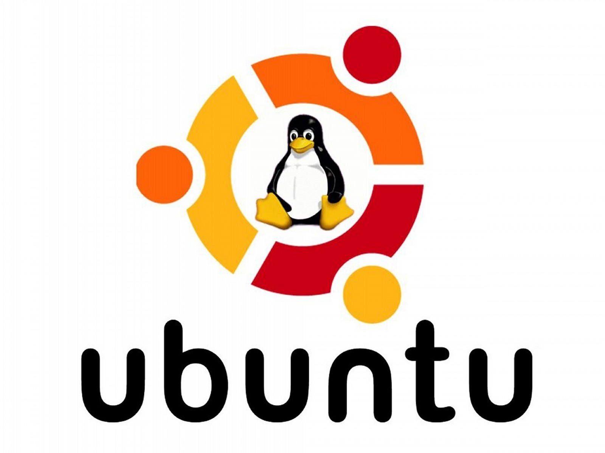
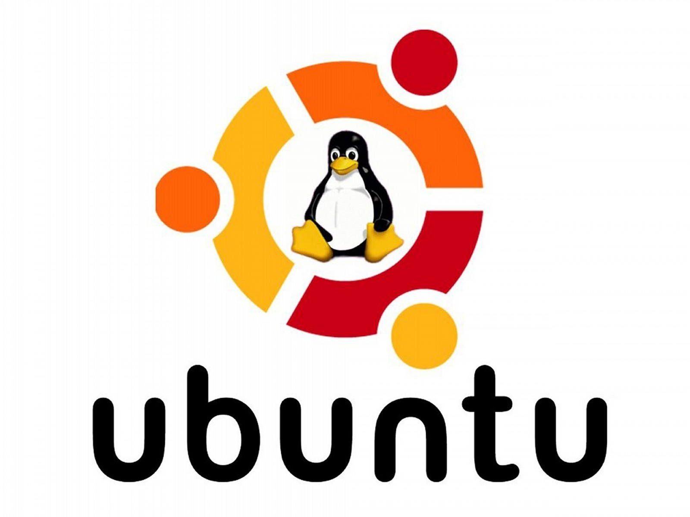
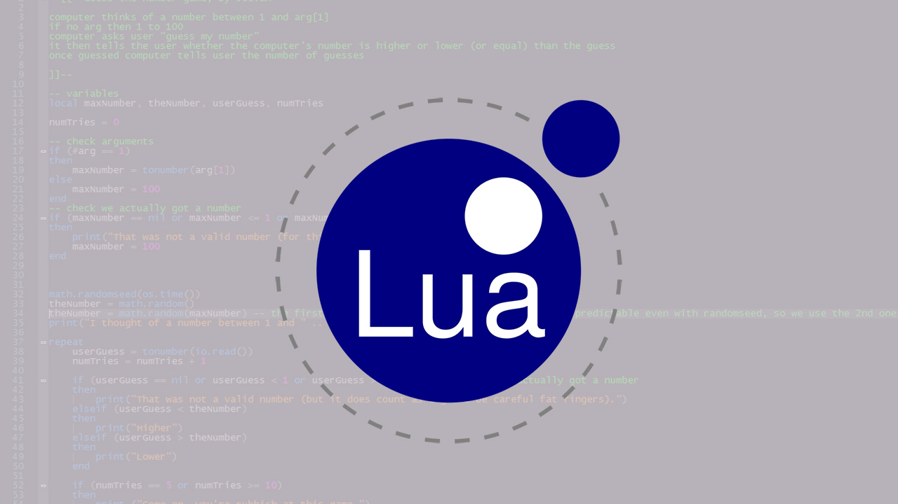
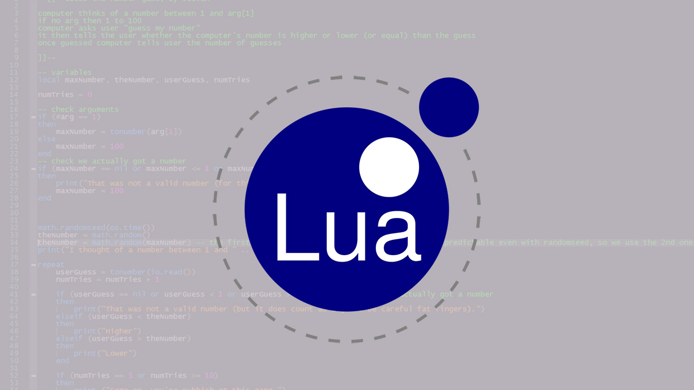

Tech Experience:
Long term interest in GNU:Linux:
 

Started in my downtime during my stint in the U.S. Navy, began working with the command line and learning to manage Fedora, Arch, Ubuntu and Gentoo Linux. Familiar with many shell built-ins including loops, aliases, functions and commonly used commands (ls, pwd, cd, grep, cat, etc.). Frequently use common methods of automating recurring tasks to save time and effort, E.G. chrond > recurringscript.sh
Programming Languages:

 

Competant with Java, passed an introductory Java course at Forsyth Tech and familiarized myself with OOP concepts. GNU: Linux experience required use of C programming and sh / bash usage. AWESOMEWM my favorite tiling window manage is written in LUA and directly modified / customized from a LUA script in real time. Python is used to bring it all together and for simple scripting tasks.